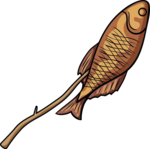
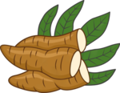
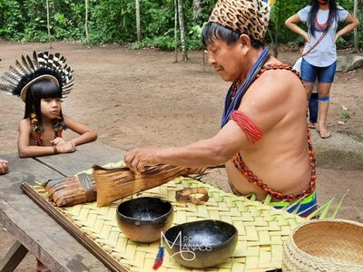
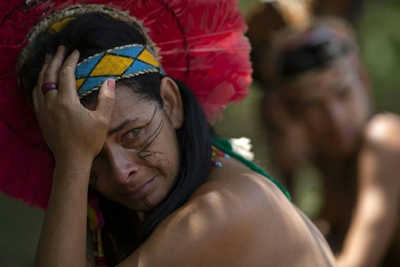

Uma dieta baseada na natureza


Alimentos como farinha de mandioca, beiju, açaí, cupuaçu e entre outros, são extremamente presentes no nosso dia, mas você sabe de onde eles vieram?
A resposta é simples, eles vieram por influência dos povos indígenas, uma alimentação baseada em raízes, frutas, verduras, caça e pesca.
Mas será que hoje em dia ainda é assim?
Nossos repórteres Raimundo Alexandre e Monik de Almeida foram até Roraima, para a tribo Macuxi entrevistar o indígena Apoena, para perguntar sobre a alimentação indígena hoje em dia.
De acordo com Apoena “Nossa alimentação ainda é baseada em vegetais, raízes, caça e frutas, como Damurida, castanha-do-brasil, beiju, caxiri etc”

Apesar de termos herdados pratos e técnicas, o contato com as cidades e a entrada de produtos industrializados tem causado alterações em muitas comunidades, e muitas de suas receitas estão sendo perdidas, não só pela industrialização, mas também pela perda de territórios, agricultura, desmatamento etc.
Por isso é necessário a demarcação de territórios, políticas de segurança alimentar que respeitem a diversidade cultural etc.